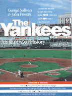

<body bgcolor="#FFFFFF" text="#000000" link="#0000FF" vlink="#CC0000" alink="#CC0000"><center><hr width="350" size="1" align="center" noshade>If you've ever cheered&#151or even booed&#151the fabulous Yankees, don't miss this unique tribute to the greatest dynasty in baseball history<hr width="350" size="1" align="center" noshade><p><a href="https://cdcshoppingcart.uchicago.edu/Cart/ChicagoBook.aspx?ISBN=9781566395533&&PRESS=temple" target="_top">Buy this book!</a> | <a href="https://cdcshoppingcart.uchicago.edu/Cart/Cart.aspx?PRESS=temple" target="_top">View Cart</a> | <a href="https://cdcshoppingcart.uchicago.edu/Cart/Cart.aspx?PRESS=temple" target="_top">Check Out</a></p><p></p></center><!--none//--><h1>The Yankees</h1>
<H2>An Illustrated History</H2>
<h3>edited by George Sullivan and John Powers</h3>
<P>cloth 1-56639-553-4 $50.50, Jul 97, <FONT COLOR=#990033>Available</FONT>
<BR> 467 pp
8.5x11
480&nbsp;halftones
</P><BLOCKQUOTE><I>"Its a grand slam: exceptional words, terrific artwork, complete records, and those wonderful columns by media superstars on Yankee greats. So this is a double two-fer; its a four-fer!"</I>
<br>&#151<b>Donald Honig</b><I></I></BLOCKQUOTE>
<p>This book offers the non-stop excitement of the illustrious story of the New York Yankees, captured in more than 450 photographs and entertaining anecdotes about all of your favorite players. Year by year from 1903 through 1996, readers will relive the celebration and disappointment of each season. From humble beginnings as the New York Highlanders, to decades of victory, to surprising lapses, the high drama of Yankee baseball is at your fingertips. Enjoy a gold mine of behind-the-scenes stories and astonishing anecdotes that show the Yanks up close -- the players, managers, coaches, and executives, all as they really are.
<p>Meet Babe Ruth, the Hall of Famer with a passion for late nights and home brew. Find out why Joltin' Joe DiMaggio got steamed for the first time in his life. Learn about the events leading up to Thurman Munson's tragic crash, and the unheeded warning from a fellow Yankee. Here are the straight facts on Reggie Jackson's stormy relationship with Billy Martin and George Steinbrenner's controversial front office tactics.
<p><i>The Yankees: An Illustrated History </i>provides complete statistics and game highlights through the 1996 season and World Championship, hitting streaks, ERA's, box scores, trades, an all-time roster of managers, players, and position leaders year by year, American League championship and World Series rosters, All-Star selections, and much, much more.
<BR>&nbsp;<h2>Excerpt</h2><P>Excerpt available at <a href="http://www.temple.edu/tempress">www.temple.edu/tempress</a></p>
<BR>&nbsp;<h2>Contents</h2><P>
<p>Foreword &#150 Ralph Houk
<br>Acknowledgments
<br>1. The Yankee Way
<br>2. All the Seasons
<br>3. Portraits of the Greats
<br>4. The Record
<br>Reading List
</P><BR>&nbsp;<H2>About the Author(s)</H2>
<table><tr><td valign="top"><img src="/tempress/authors/1378_au1.gif" height="90" width="75"></td><td width="100%" valign="middle"><p><B>George Sullivan</B> has written articles for <i>The New York Times </i>and the <i>Washington Post. </i>The former public relations director for the Boston Red Sox, he worked with co-author John Powers at the <i>Boston Globe</i> when the sports section was declared #1 by <i>Time</i> magazine and the Associated Press. He is author of <i>The Sports Curmudgeon </i>(with Barbara Lagowski), <i>The Picture History of the Boston Celtics, The Picture History of the Boston Red Sox, The Flying Fisherman </i>(by "Gadabout" Gadddis as told to George Sullivan), and <i>The Detroit Tigers </i>(with David Cataneo).</P></td></tr></table><table><tr><td valign="top"><img src="/tempress/authors/1378_au2.gif" height="90" width="75"></td><td width="100%" valign="middle"><p><B>John Powers </B>has been a staff writer for the <i>Boston Globe </i>since 1973 and shared the 1983 Pulitzer Prize for national reporting. He currently writes for the newspaper's Sunday magazine and also covers the Olympics and World Cup soccer. He is the author of <i>The Short Season, One Goal </i>(with Art Kaminsky), <i>Mary Lou </i>(with Mary Lou Retton and Bela Karolyi), and <i>Seasons to Remember </i>(with Curt Gowdy).</P></td></tr></table>
<BR><H2>Subject Categories</H2>
<p><A HREF="/tempress/sports.html" TARGET="_top">Sports</a>
<BR><A HREF="/tempress/general.html" TARGET="_top">General Interest</a>
</p>
<BR><h2 class="inpageheading">In the series</H2>
<P><I><a href="http://www.temple.edu/tempress/baseball.html" onMouseOver="window.status='Click for other books in this series!'; return true;" onMouseOut="window.status=''; return true;" target="_top">Baseball in America</a></i>, edited by Rich Westcott.
</p>
<p align="center"><a href="https://cdcshoppingcart.uchicago.edu/Cart/ChicagoBook.aspx?ISBN=9781566395533&&PRESS=temple" target="_top">Buy this book!</a> | <a href="https://cdcshoppingcart.uchicago.edu/Cart/Cart.aspx?PRESS=temple" target="_top">View Cart</a> | <a href="https://cdcshoppingcart.uchicago.edu/Cart/Cart.aspx?PRESS=temple" target="_top">Check Out</a></p><p><font face="Arial" size="1"><a href="copyright.html" onMouseOver="window.status='Web Copyright Policy';return true;" onMouseOut="window.status=''" title="Web Copyright Policy">&copy;</a> 2015 <a href="http://www.temple.edu" target="new" onMouseOver="window.status='Link to Temple University home page';return true;" onMouseOut="window.status=''" title="Link to Temple University home page">Temple University</a>. All Rights Reserved. http://www.temple.edu/tempress/titles/1378_reg.html</font></p>